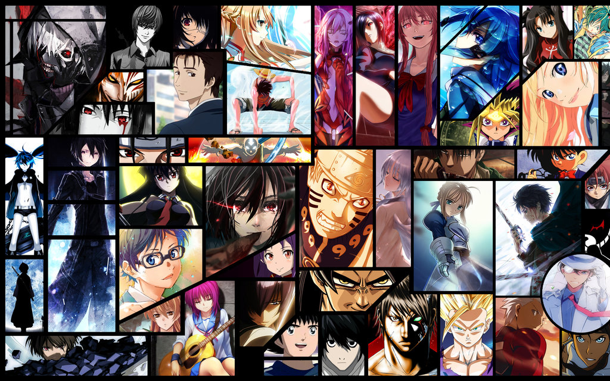

Top 10 Rated Anime Of All Time:
- Fullmetal Alchemist: Brotherhood
- Cowboy Bebop
- Monster
- One Piece
- Bleach
- Mob Psycho 100
- Hunter x Hunter
- Attack on Titan
- Naruto Shippuden
- Death Note
About:
- Fullmetal Alchemist: Brotherhood
The struggle of most anime is laying out intricate world-building while balancing a cast of memorable characters, iconic moments, and thrilling fights. And that's what makes Fullmetal Alchemist: Brotherhood so special. The framing device for our entry into this sprawling world is one of sympathy. We understand why the Elric brothers would practice forbidden alchemy in an attempt to resurrect their dead mother at the cost of their physical bodies. And yet despite divine intervention slapping them in the face, telling them no, they continue on their quest. And that quest to resurrect their mother paves the way for motivation that guides them through a world of monsters, government conspiracy, and divinity. And despite all this elegance, FMA: Brotherhood also knows when to lay it all bare in unforgettable moments that will leave you standing in front of your TV cheering for the Elric brothers.
- Cowboy Bebop:
- Monster:
- One Piece:
- Bleach:
- Mob Psycho 100:
- Hunter x Hunte:
- Attack on Titan
- Naruto Shippuden
- Death Note

It's hard to believe Cowboy Bebop is over 20 years old because of how well it still holds up, both in its conception and its execution. The space western that introduced the world to Spike, Jet, Faye, Ed and of course Ein still looks gorgeous, with a resonant story, strong characters and one heck of a soundtrack that ensures it remains one of the best anime ever made. Cowboy Bebop has had an indelible impact that reaches far beyond anime; everyone from Orson Scott Card to Rian Johnson to Robin Williams have praised the series and cited its influence on their work. Cowboy Bebop still works so well because of the continually relatable story at the heart of its genre-bending 26-episode run. Its exploration of adult themes like loss anchors the crew’s journey throughout the stars, making it a series we’re happy to revisit even after all this time. Three, two, one, let's jam!

Monster is quite simply one of the best stories ever told in anime/manga form, but more than that, it’s a special anime because of how different it is from everything else. In a medium dominated by giant robots, superpowered heroes that shoot beams out of their hands, and virtual fantasy worlds, Monster is refreshingly grounded in reality. It’s a dark, mature, gritty thriller about a good man who loses everything after doing what he believed to be the right thing, and the dark descent that he must endure in order to correct his mistake.
There's a reason Eiichiro Oda's One Piece has been going steady since 1999 and spawned all manner of theatrical and TV spinoffs. We just can’t get enough of the wacky, engrossing saga of stretchable pirate captain Monkey D. Luffy and his ongoing quest to become the next Pirate King. The series is endlessly entertaining, but the characters are what keep you hooked over the course of 900 episodes (and counting)

Bleach (stylized as BLEACH) is a Japanese anime television series based on Tite Kubo's original manga series of the same name. It was produced by Studio Pierrot and directed by Noriyuki Abe. The series aired on TV Tokyo from October 2004 to March 2012, spanning 366 episodes. The story follows the adventures of Ichigo Kurosaki after he obtains the powers of a Soul Reaper—a death personification similar to the Grim Reaper—from another Soul Reaper, Rukia Kuchiki. His newfound powers force him to take on the duties of defending humans from evil spirits and guiding departed souls to the afterlife. In addition to adapting the manga series it is based on, the anime periodically includes original self-contained storylines and characters not found in the manga

on't let the title fool you. Mob Psycho 100 is another fun romp from original One-Punch Man creator One. The series works as both a parody of shonen-style anime and a great example of it, revolving around an eighth-grader named Mob, a quiet, reserved boy who specializes in exorcising evil spirits. The catch is that his own supernatural powers are tied to his emotions. If he gets pushed over the edge, the entire world is in peril. This series thrives on the strength of its humor, its small but memorable cast of characters and its dynamic visual style.

Hunter x Hunter (pronounced Hunter Hunter) starts out with a familiar trope: A hero, in this case a young boy named Gon, leaves his small town for the first time on an adventure. He leaves the island on a quest to find his long-forgotten father who had left him behind. His only clue? He’s a world-famous licensed Hunter -- so Gon sets off to take the notoriously deadly exam and become a Hunter himself. It sounds mundane and almost cheery, but Hunter x Hunter is anything but. The emotional highs and lows and the arcs of both the protagonists and antagonists are some of the best. As with most shonen, the dramatic action is fantastic, too.

Attack on Titan (Japanese: 進撃の巨人, Hepburn: Shingeki no Kyojin, lit. 'The Advancing Giants') is a Japanese manga series written and illustrated by Hajime Isayama. It is set in a world where humanity is forced to live in cities surrounded by three enormous walls that protect them from gigantic man-eating humanoids referred to as Titans; the story follows Eren Yeager, who vows to exterminate the Titans after they bring about the destruction of his hometown and the death of his mother. Attack on Titan was serialized in Kodansha's monthly shōnen manga magazine Bessatsu Shōnen Magazine from September 2009 to April 2021, with its chapters collected in 34 tankōbon volumes
The long-running Naruto series has been referred to as one of the “big three” anime because of its wild popularity around the world, and for good reason. It’s full of action-packed fight sequences, hilariously fun moments, and dramatic scenes that pull at your heartstrings. In Naruto Shippuden, the story takes a darker and more serious tone as the characters are now older and face even more daunting challenges from the shadows as well as themselves. The Naruto anime series is known for its memorable characters and relationships, and it continues to be one of the biggest shounen anime ever, even long after it has ended.

Death Note (stylized in all caps) is a Japanese manga series written by Tsugumi Ohba and illustrated by Takeshi Obata. The story follows Light Yagami, a teen genius who discovers a mysterious notebook: the "Death Note", which belonged to the shinigami Ryuk, and grants the user the supernatural ability to kill anyone whose name is written in its pages. The series centers around Light's subsequent attempts to use the Death Note to carry out a worldwide massacre of individuals whom he deems immoral and to create a crime-free society, using the alias of a god-like vigilante named "Kira", and the subsequent efforts of an elite Japanese police task force, led by enigmatic detective L, to apprehend him. Death Note ran in Shueisha's manga magazine Weekly Shōnen Jump from December 2003 to May 2006. Its 108 chapters were collected in 12 tankōbon volumes.
Top most Popular Anime in 2021:
- TOKYO REVENGERS
- TO YOUR ETERNITY
- STAR WARS: VISIONS
- JUJUTSU KAISEN
- SONNY BOY
- BEASTARS (SEASON 2)
- SAKUGAN
- MEGALOBOX 2: NOMAD
- DEMON SLAYER: KIMETSU NO YAIBA SEASON 2
- BLUE PERIOD
üëâGET ALL ANIME HERE
üòçConfirmed 2023 Series:

- Attack on Titan The Final Season Part 3
- Trigun Stampede
- Dr. Stone Season 3
- MF Ghost
- Jujutsu Kaisen Season 2
- Classroom of the Elite Season 3
- The Duke of Death and His Maid Season 2
- High Card
- The IDOLM@STER Million Live!
- Sacrificial Princess and the King of Beasts
- A Galaxy Next Door
- Tokyo Revengers Christmas Showdown Arc
- eborn to Master the Blade: From Hero-King to Extraordinary Squire
- Witch on the Holy Night
- In/Spectre Season 2
- Ooyukiumi no Kaina
2023 Anime Filmsüëá
- Blue Giant Movie – February 2023
- Black Clover Movie – 2023
- Kitarou Tanjou: Gegege no Nazo – 2023
- My Next Life as a Villainess All Routes Lead to Doom! Movie – 2023
- ailor Moon Cosmos Films – Summer 2023